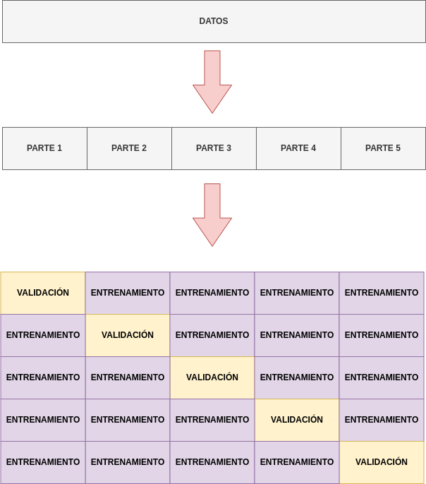

Validar un modelo#
Una vez entrenado un modelo, se reailza un proceso para evaluar qué tan bien generaliza un modelo a datos no vistos. La idea fundamental es verificar la capacidad del modelo para hacer predicciones precisas en situaciones nuevas, que no estuvieron presentes durante el proceso de entrenamiento.
Validar un modelo en el contexto del aprendizaje automático es esencial por varias razones clave:
Evaluación del Rendimiento: La validación permite medir qué tan bien el modelo se desempeña en datos que no ha visto durante el entrenamiento. Proporciona una evaluación realista del rendimiento del modelo en situaciones del mundo real.
Prevención del Sobreajuste (Overfitting): La validación ayuda a identificar si el modelo está sobreajustado a los datos de entrenamiento. El sobreajuste ocurre cuando el modelo se ajusta demasiado a los detalles específicos de los datos de entrenamiento y no generaliza bien a nuevos datos.
Selección de Modelos y Parámetros: Permite comparar diferentes modelos y configuraciones de parámetros para elegir la combinación que mejor se ajuste a los datos. Se pueden probar múltiples algoritmos y ajustes sin comprometer la evaluación en datos no vistos.
Mejora del Rendimiento: Al evaluar el rendimiento del modelo, se pueden identificar áreas de mejora. Esto puede incluir ajustar parámetros, cambiar algoritmos o adquirir más datos para abordar deficiencias específicas.
Generalización del Modelo: La validación garantiza que el modelo sea capaz de generalizar a datos más allá de los ejemplos de entrenamiento. Es crucial para asegurar que el modelo sea útil y efectivo en una variedad de situaciones.
Validación con datos previamente separados#
Recordemos que inicialmente hemos dividido nuestros datos en tres conjuntos, uno de ellos de validación. Una vez entrenado el modelo y testeado, es cuando debemos utilizar este subconjunto de datos para validar que generaliza bien y no hay sobreajuste:
from sklearn.linear_model import LinearRegression
from regression import get_train_test_validation, calculate_error
PATH_DATASET = "../../../csv/"
X_train, X_test, X_val, y_train, y_test, y_val = get_train_test_validation(PATH_DATASET)
reg = LinearRegression().fit(X_train, y_train)
print("Error de test")
y_pred = reg.predict(X_val)
calculate_error(y_val, y_pred)
#Una vez ya se ha parametrizado todo el modelo y hemos ajustado todo lo posible para reducir el error, podemos validarlo.
print("\nError de validación")
y_pred = reg.predict(X_test)
calculate_error(y_test, y_pred)
Error de test
RMSE: 6427.98
MAPE: 0.51
R2: 0.7
Error de validación
RMSE: 6623.37
MAPE: 0.46
R2: 0.7
Parece que el modelo generaliza bastante bien, ya que el error no canvia demasiado.
Validación cruzada#
Una alternativa para evaluar nuestros modelos es utilizar la validación cruzada. La validación cruzada es una técnica fundamental en el campo del aprendizaje automático y la estadística que se utiliza para evaluar el rendimiento de un modelo predictivo. Su propósito principal es abordar la variabilidad en la estimación del rendimiento del modelo y garantizar que la evaluación sea robusta y generalizable. Este método implica dividir el conjunto de datos en diferentes subconjuntos, realizando múltiples rondas de entrenamiento y prueba en distintas particiones.
En su forma más común, la validación cruzada k-fold divide el conjunto de datos en k partes iguales, utilizando k-1 partes para entrenar el modelo y la parte restante para evaluar su rendimiento. Este proceso se repite k veces, de modo que cada subconjunto se utiliza como conjunto de prueba exactamente una vez. Al final, se promedian los resultados de todas las iteraciones para obtener una métrica de rendimiento global.
{kind=link}
Una ventaja clave de la validación cruzada es su capacidad para proporcionar una estimación más precisa del rendimiento del modelo en comparación con una única división de datos. Además, ayuda a mitigar el riesgo de sobreajuste al evaluar el modelo en múltiples configuraciones de datos. Esta técnica es especialmente útil cuando el tamaño del conjunto de datos es limitado, ya que maximiza la información utilizada tanto para entrenar como para evaluar el modelo.
Por ejemplo, vamos a relizar la validación cruzada de nuestro modelo con un total de 10 validaciones:
from sklearn.model_selection import cross_val_score
from regression import get_X_y
X, y = get_X_y(PATH_DATASET)
scores1 = cross_val_score(reg, X, y, scoring="neg_mean_absolute_percentage_error", cv=10)
scores2 = cross_val_score(reg, X, y, scoring="neg_root_mean_squared_error", cv=10)
print("Mape Scores")
print(-scores1)
print("\nRMSE Scores")
print(-scores2)
Mape Scores
[0.47228407 0.45610038 0.4311499 0.51238639 0.47700388 0.48940038
0.48260175 0.45880937 0.44544081 0.57950976]
RMSE Scores
[6358.86647573 6323.47809466 6176.06827465 6660.42907809 7355.92524752
5393.33143125 6732.67761018 7242.98925794 6281.49809334 7507.62093869]
La puntuación del modelo y la desviación vienen dadas por:
print("%0.2f accuracy with a standard deviation of %0.2f" % (-scores1.mean(), scores1.std()))
print("%0.2f accuracy with a standard deviation of %0.2f" % (-scores2.mean(), scores2.std()))
0.48 accuracy with a standard deviation of 0.04
6603.29 accuracy with a standard deviation of 608.41